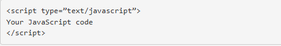
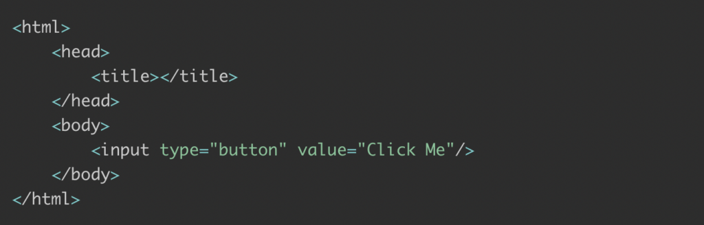
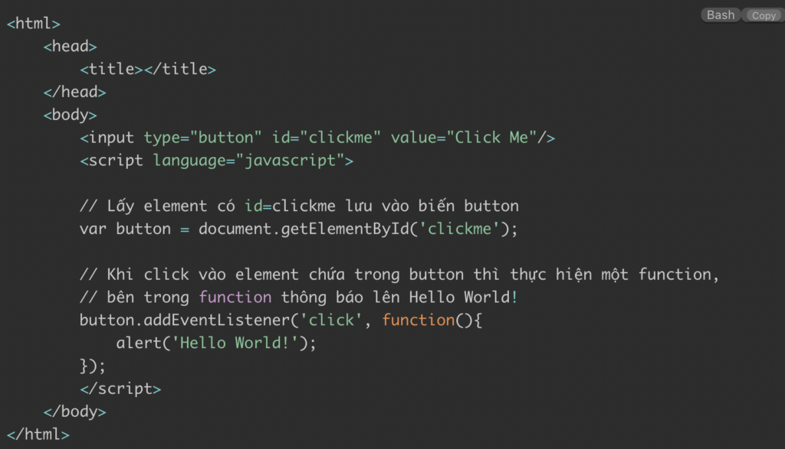

⏯ JavaScript là ngôn ngữ lập trình website phổ biến hiện nay, nó được tích hợp và nhúng vào HTML giúp website trở nên sống động hơn. JavaScript đóng vai trò như là một phần của trang web, thực thi cho phép Client-side script từ phía người dùng cũng như phía máy chủ (Nodejs) tạo ra các trang web động.
JavaScript là một ngôn ngữ lập trình thông dịch với khả năng hướng đến đối tượng. Là một trong 3 ngôn ngữ chính trong lập trình web và có mối liên hệ lẫn nhau để xây dựng một website sống động, chuyên nghiệp:
⚡ Nhiệm vụ của Javascript là xử lý những đối tượng HTML trên trình duyệt. Nó có thể can thiệp với các hành động như thêm / xóa / sửa các thuộc tính CSS và các thẻ HTML một cách dễ dàng.
Hay nói cách khác, Javascript là một ngôn ngữ lập trình trên trình duyệt ở phía client. Tuy nhiên, hiện nay với sự xuất hiện của NodeJS đã giúp cho Javascript có thể làm việc ở backend.
⚡ Bạn hãy thử truy cập vào một số website trên internet thì sẽ thấy có những hiệu ứng slide, menu xổ xuống, các hình ảnh chạy qua chạy lại rất đẹp. tất cả các chức năng này đều được xử lý bằng Javascript.
Trong những năm gần đây, sự xuất hiện của các framework như NodeJS (chuyên code backend), ExpressJS (NodeJS framework), và nhiều thư viện frontend khác như Angular, jQuery, RactJS ra đời, giúp tạo ra một cơn sốt với từ khóa Javascript Fullstack.
Sau sự ra đời của Nodejs, JavaScript đã mở rộng khả năng của mình từ việc chỉ là một ngôn ngữ lập trình chạy trên trình duyệt, trở thành một công cụ mạnh mẽ để phát triển các ứng dụng server-side , giúp các Developer sử dụng một ngôn ngữ duy nhất cho toàn bộ ứng dụng (frontend + backend).
Là thư viện được xây dựng dựa trên JS phục vụ cho từng mục đích và lĩnh vực khác nhau JavaScript Framework là thư viện được xây dựng dựa vào ngôn ngữ lập trình JavaScript.
Từ đó, mỗi framework được tạo ra để phục cho từng lĩnh vực khác nhau. Bạn có thể tìm hiểu kỹ hơn về framework là gì, sẽ giúp bạn có thêm nhiều thông tin rõ ràng hơn. Hiện nay, có rất nhiều JavaScript Framework thông dụng như:
⛅ Client-side JavaScript là mã JavaScript được thực thi trực tiếp trên trình duyệt của người dùng (Google Chrome, Microsoft Edge, Fire Fox), thường được sử dụng để tạo ra các tính năng tương tác và động trên trang web. Dưới đây là một số tính năng của client-side JavaScript:
Server-side JavaScript là các đoạn mã JavaScript được thực thi trên máy chủ, giúp quản lý các yêu cầu từ client, tương tác với cơ sở dữ liệu,... Dưới đây là một số tính năng của server-side JavaScript:
✈ Đối với dân lập trình, thì việc viết một chương trình JavaScript tương đối dễ dàng. Thế nhưng, đối với người mới thì việc viết một chương trình ở trên JS còn khá lạ.
Vậy nên, bạn có thể viết chương trình với các bước hướng dẫn như sau
Trong JS, chúng ta có 3 cách để đặt thẻ Script phổ biến như:
Có 3 cách đặt thẻ script thường được sử dụng như dưới đây:
👉 Với Internal, thông thường thẻ Script sẽ được đặt ở trong thẻ < head >, tuy nhiên bạn cũng có thể đặt ở bất kỳ chỗ nào. Yêu cầu duy nhất là phải có chứa đầy đủ mở và đóng thẻ script . Bằng cách này, bạn có thể đặt phần head ở trong file HTML hiện có của mình.
👉 Đối với External, bạn sẽ viết được các đoạn mã Javascript ra trong một file mới. Sau đó, bạn lưu phần mở rộng này với đuôi .js. Kế đến, bán ẽ sử dụng thẻ Script để import file vào. Bạn không cần đến thẻ đóng < /script > vì trong file test.js đã có sự hiện diện của đuôi js
👉 Vì vậy, trình duyệt sẽ tự động nhận dạng được đây là một file có chứa những mã Javascript. Đối với Inline, cách sẽ sẽ cho phép bạn viết trực tiếp các đoạn mã JS vào bên trong thẻ HTML một cách nhanh chóng.
Tất cả những đoạn mã JS đều sẽ được đặt ở trong cặp thẻ đóng và mở script. Một ví dụ cụ thể dễ hiểu như sau:

Thực ra, để viết một chương trình JS cũng tương đối đơn giản. Khi bạn đã tìm hiểu về JS và biết được JS là ngôn ngữ gì thì tiếp theo chúng tôi sẽ hướng dẫn bạn cách viết chương trình đơn giản như sau:
Bước 1: Bạn tạo 1 file index.html vào bất cứ vị trí nào ở trên máy tính, miễn là chúng có phần mở rộng .html. Sau đó, bạn viết một đoạn mã như hình sau:
Đoạn mã viết chương trình
Bước 2:Bạn có thể viết mã chương trình Javascript khi click chuột vào button với id=“clickme”.
Đoạn mã viết chương trình
Để có thể nhúng một chuỗi code JS lên trang web thì bạn chỉ cần gắn tag script là được. Cụ thể:

📌 Một quy tắc cơ bản là bạn nên gắn JS ở trong tà < header> cho website. Trừ khi mà bạn muốn JS thực thi ở một thời điểm nhất định nào đó hoặc một yếu tố cụ thể của trang web.
📌 Ngoài ra, bạn cũng có thể lưu lại code JS ở dưới dạng một file riêng. Và mỗi khi bạn cần khi sử dụng web thì bạn có thể mở file này lên. Cụ thể, bạn có thể thêm JS vào HTML một cách trực tiếp hoặc chèn JS trong HTML thông qua một file độc lập khác.
📢 Trong khảo sát hàng năm của Stack Overflow, JavaScript tiếp tục là ngôn ngữ lập trình phổ biến nhất trong suốt 11 năm liên tiếp. Đây là khảo sát lớn nhất trên thế giới trong lĩnh vực lập trình, với sự tham gia của 87,585 developers trên toàn cầu.
Stack Overflow Developer Survey 2023
📢 Báo cáo GitHub Octoverse năm 2023 cũng chỉ ra rằng JavaScript là ngôn ngữ lập trình phổ biến nhất trên nền tảng này trong suốt 10 năm. JavaScript luôn đứng đầu về số lượng repository và đóng góp của cộng đồng.
GitHub Octoverse Report 2023
🔰 Javascript là một ngôn ngữ phổ biến, dễ học, chúng ta có thể kiểm tra code của mình ngay trong trình duyệt, ngôn ngữ này thân thiện với người mới bắt đầu hơn nhiều so với các ngôn ngữ lập trình khác.
🔰 JavaScript có một cộng đồng lập trình viên lớn mạnh và sôi động, cung cấp vô số tài nguyên học tập, thư viện mã nguồn mở, và các công cụ hỗ trợ.
🔰 JavaScript được các lập trình viên ưa chuộng nhờ khả năng tạo ra các giao diện phong phú và hấp dẫn. JavaScript tích hợp chặt chẽ với cấu trúc trang web (DOM), cho phép thay đổi nội dung, cấu trúc và kiểu dáng của trang web theo thời gian thực.
🔰 Kết hợp với AJAX, JavaScript có thể giao tiếp với máy chủ và cập nhật trang web mà không cần tải lại toàn bộ. Thêm vào đó, các thư viện và framework như React, Angular, và Vue.js giúp tăng tốc quá trình phát triển.
🔰 JavaScript có thể phát triển các ứng dụng web hoàn chỉnh, quản lý cả frontend và backend chỉ với một ngôn ngữ. Với sự ra đời của Nodejs, JavaScript đã trở thành ngôn ngữ lý tưởng cho việc phát triển toàn diện (end-to-end).
🔰 Tuy nhiên, từ năm 2009, với Nodejs - một môi trường runtime cho phép JavaScript chạy trên server, các lập trình viên có thể tương tác với cơ sở dữ liệu, quản lý yêu cầu HTTP, tạo nội dung động bằng JavaScript. Điều này giúp lập trình viên sử dụng JavaScript cho cả frontend và backend, dẫn đến làn sóng "JavaScript ở khắp mọi nơi".
🔰 JavaScript cho phép phát triển backend, frontend, ứng dụng web, ứng dụng di động chỉ với một ngôn ngữ. JavaScript có thể hoạt động cả ở phía client và server nhờ vào Nodejs
🔰 Giúp nó trở nên cực kỳ linh hoạt. Các framework như Reactjs, Angular, Vuejs giúp tổ chức các ứng dụng phức tạp, trong khi React Native giúp tạo ra Mobile App. Javascript giúp nhiều công ty giảm bớt số lượng ngôn ngữ lập trình, tăng hiệu suất và đảm bảo tính nhất quán trong toàn bộ hệ thống.
📌 Trên đây là toàn bộ thông tin về Javascript và cả cách viết chương trình JS một cách đơn giản nhất. Tuy nhiên, những thông tin trên đây chỉ cho bạn cái nhìn tổng quan nhất về ngôn ngữ lập trình này. Nếu bạn muốn phát triển tốt hơn trong lĩnh vực này thì nên tìm hiểu sâu hơn và học kỹ hơn về ngôn ngữ lập trình.
📌 Với khả năng thích ứng và phát triển không ngừng, JavaScript đã khẳng định vị thế là một trong những ngôn ngữ lập trình được sử dụng nhiều nhất trên toàn cầu.
📌 Nếu bạn đang băn khoăn không biết học ngôn ngữ gì khi mới tiếp cận với ngành IT, mong muốn trở thành Backend/Frontend Developer trong tương lai thì Javascript chính là lựa chọn tốt nhất vì Javascript có thể vừa phát triển được cả backend lẫn frontend.
Bạn thấy bài viết hay và hữu ích? Đừng ngại Share với bạn bè và đồng nghiệp nhé! Cảm ơn bạn 🧡